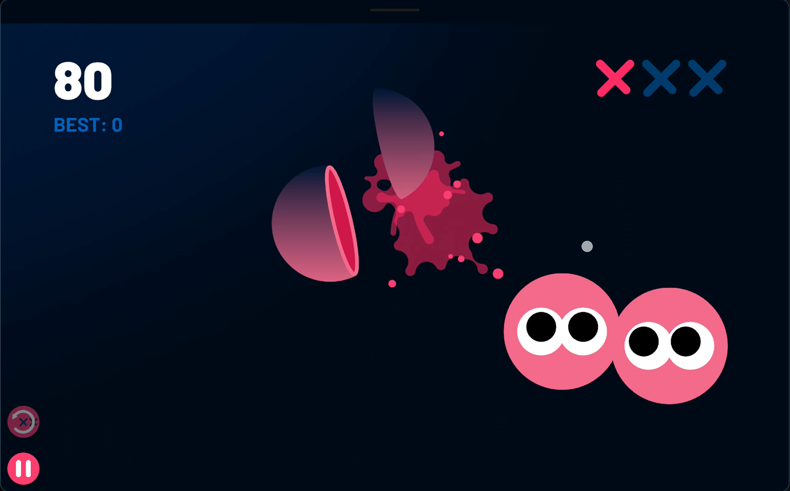
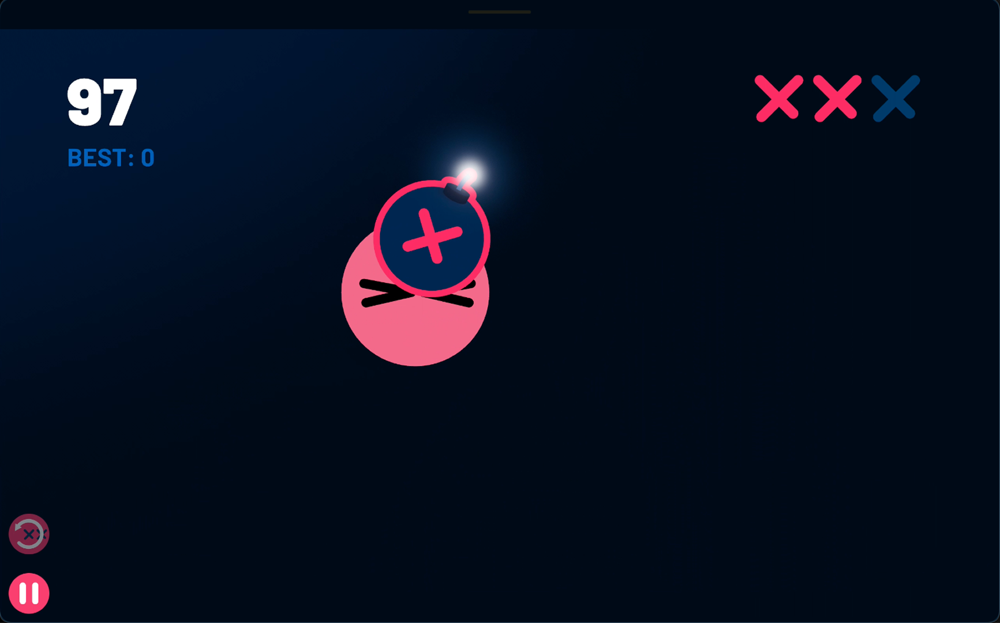

Documentação Slice Heads

Pacote: com.gelsonschikorski.sliceheads
O Slice Heads é um jogo casual para Android em que você corta cabeças com gestos de arrastar, evita bombas e tenta bater seu recorde. A partida usa animação interativa em Rive (proporção 16:9, modo paisagem) e pode integrar Google Play Games para placar e conquistas.
Nesta documentação você encontra um guia das funcionalidades do app, alinhado ao que está disponível no menu e nas telas in-app.


Política de privacidade
Acesse a política de privacidade clicando aqui.
Aviso
Este aplicativo é um jogo independente desenvolvido por Gelson Schikorski. Não possui vínculo com a Rive, Inc. nem com o autor original da animação do marketplace, além do uso da obra Heads Will Roll conforme a licença CC BY 4.0. A animação base está em: Heads Will Roll — Rive Marketplace.
Funcionalidades
Menu principal
No menu você pode:
O placar global e as conquistas dependem de login na conta Google via Play Games.
Como jogar (partida)
A experiência principal é em modo paisagem, pois a animação foi feita para 16:9. Em celulares, o jogo pode exibir uma mensagem pedindo para girar o aparelho antes de começar.
Regras principais:
| Ação | Efeito |
|---|---|
| Arrastar sobre as cabeças | Corta na direção do gesto; pontua |
Durante a partida há botão de pausa. Ao pausar, a animação e a música de fundo param até você continuar ou voltar ao menu.
Strikes e créditos “Clear strikes”
Quando você perde cabeças, acumula strikes. É possível, de forma opcional:
Os créditos não são obrigatórios — dá para jogar sem assistir anúncios.
A tela How to play no app mostra uma prévia visual desse botão (com e sem crédito).
Configurações de som
No Settings (folha inferior no menu) você ajusta:
A trilha muda conforme o progresso da partida (faixas por faixa de pontuação) e há música específica no game over. A música pausa durante vídeos recompensados e quando o jogo está pausado.
Google Play Games
Integração opcional com Play Games:
Sem login, placar e conquistas do Play Games não ficam disponíveis; o best score local continua sendo salvo no aparelho.
How to play e Créditos (no app)
Telas nativas no aplicativo (não dependem de internet, exceto links tocáveis nos créditos):
Política de privacidade (no app)
A política é exibida em WebView a partir de uma URL configurada pelo desenvolvedor. Ela deve descrever uso de dados por serviços como Firebase (analytics, crashes, desempenho), Google AdMob (anúncios) e Play Games, conforme a versão publicada.
Dados salvos no aparelho
Sem criar conta própria do Slice Heads, o app pode guardar localmente:
Com backup automático do Android ativo, esses dados podem entrar no backup do sistema, conforme configuração do fabricante.
Requisitos e permissões
Créditos da animação
A cena de jogo é baseada em Heads Will Roll, de isaganttus, adaptada para o Slice Heads, sob Creative Commons Attribution 4.0 International.